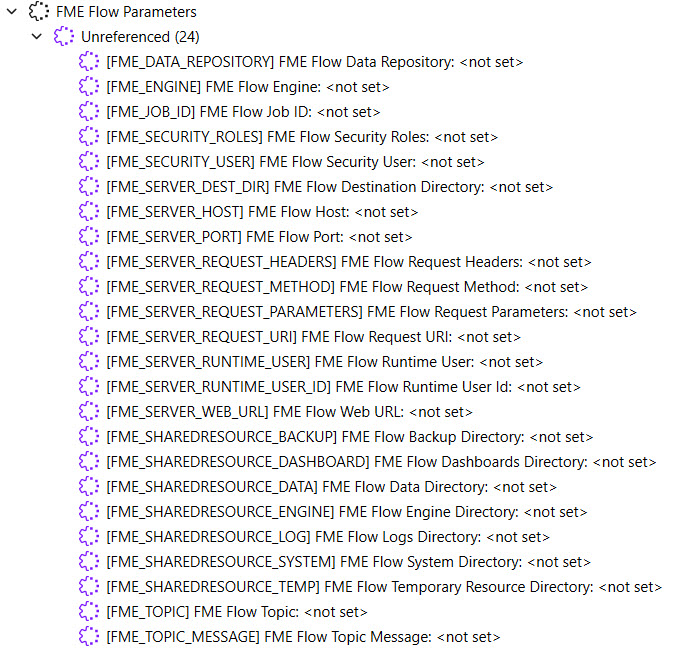
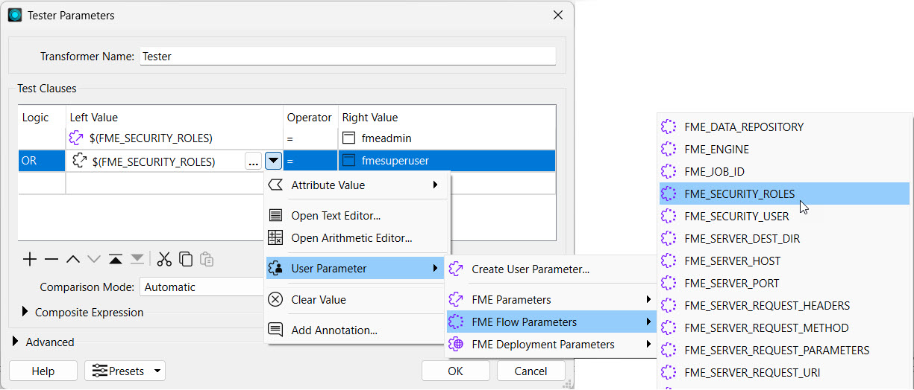
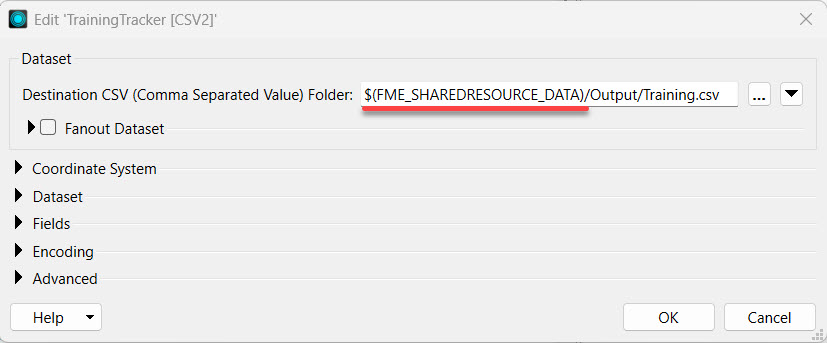
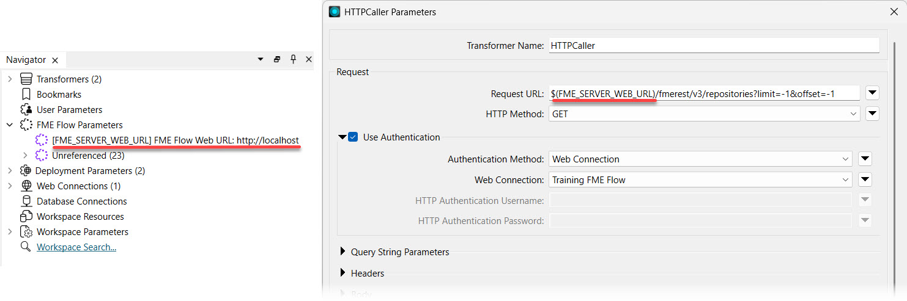
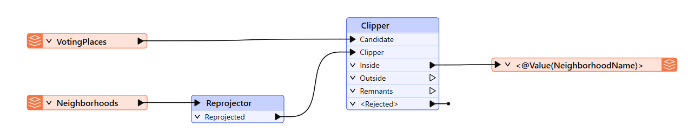
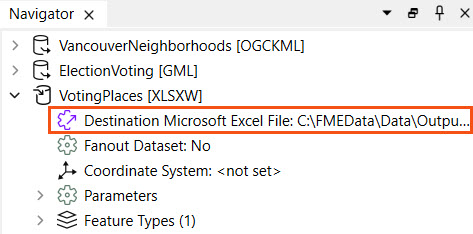
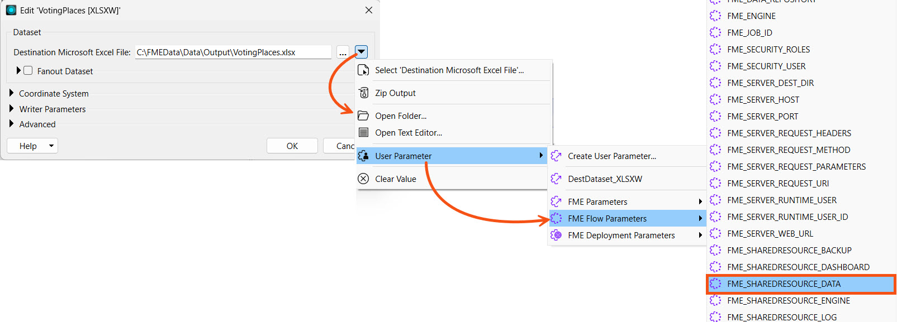
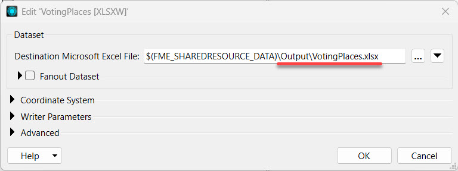
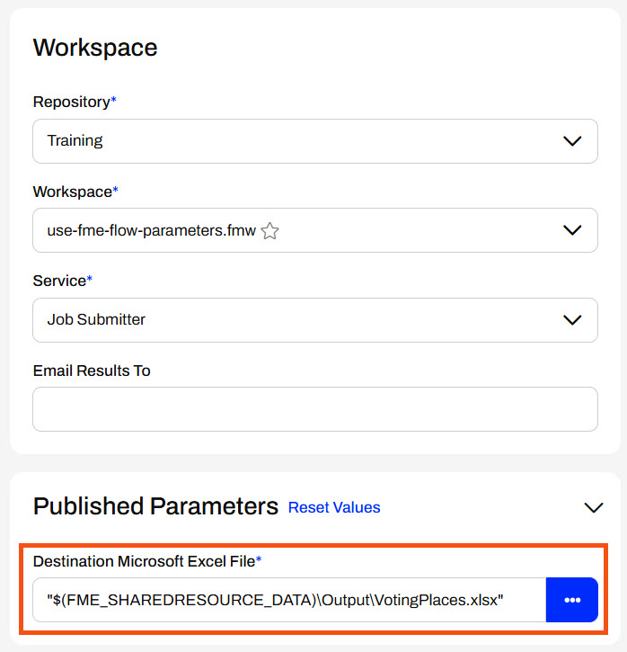
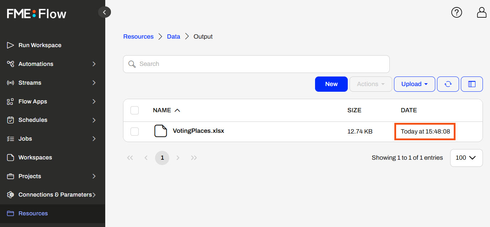

You can learn more about managing data in the FME Flow Resources with the FME_SHAREDRESOURCE_DATA parameter in Manage FME Flow Data and Connections.
After completing this lesson, you’ll be able to:
FME Flow parameters reference FME Flow system settings to customize and control workspaces run from FME Flow. FME Workbench lists the FME Flow parameters in the Navigator window for easy insertion into workflows.

Some commonly used FME Flow parameters include:
You can find a description of all FME Flow parameters in our FME Flow Parameters documentation.
You can learn more about managing data in the FME Flow Resources with the FME_SHAREDRESOURCE_DATA parameter in Manage FME Flow Data and Connections.
FME Flow parameters are linked to readers, writers, and transformers, similar to how existing user parameters are linked. Here's an example of using the FME_SECURITY_ROLES parameter in a Tester to filter for users belonging to the fmeadmin or fmesuperuser roles on FME Flow. This workflow could be expanded to write specific data to the user if they belong to one of those roles. Otherwise, the data may be excluded.

Like user parameters in FME Workbench, FME Flow parameters can be hardcoded into workspace parameters following the $(FME_FLOW_PARAMETER) format. Here's an example where the FME Flow Resources Data folder is referenced using the $(FME_SHAREDRESOURCE_DATA) parameter for an output CSV location.

When running workspaces referencing FME Flow parameters on FME Workbench, you must assign a value to the FME Flow parameter. However, when a workspace runs on FME Flow using these parameters, FME Flow automatically fills in the value based on the FME Flow system settings. Here's an example where the FME_SERVER_WEB_URL parameter is referenced in an HTTP Caller to make a GET request to the FME Flow REST API. To run successfully on FME Workbench, you must enter the URL http://localhost into the FME_SERVER_WEB_URL parameter.

Running the workspaces on FME Workbench can be useful for testing and debugging. If the workspace is only run on FME Flow, the FME Flow parameter value does not need to be set manually; it will automatically use the value on FME Flow.

Jennifer continues updating workspaces that will be deployed on FME Flow. She's working on one that clips election voting locations by neighborhood and writes a list of voting places for each neighborhood. This workspace currently writes the data to a local file system, and Jennifer shares it with users who need it for their FME workflows. However, others will easily access it if it were written to the FME Flow Resources, so other users' workflows can easily read the data in from Resources. To accomplish this, Jennifer will use the $(FME_SHAREDRESOURCE_DATA) parameter to write the output data to the FME Flow Resources Data folder.
Jennifer starts with her workspace (C:\FMEData\Workspaces\DeployWorkflowsWithFMEFlow\use-fme-flow-parameters.fmw) in FME Workbench. The workspace reads the Voting Places and Neighborhoods, clips the data by neighborhood, and writes the clipped data to a Microsoft Excel file with a different sheet for each neighborhood.

Jennifer expands the VotingPlaces [XLSXW] writer parameters in the Navigator and double-clicks the Destination Microsoft Excel File parameter.

She uses the drop-down arrow to select the $(FME_SHAREDRESOURCE_DATA) FME Flow parameter and then adds \Output\VotingPlaces.xlsx.


Now that the workspace writes data using the FME Flow parameter, Jennifer clicks OK to close the writer settings and is ready to publish it to FME Flow.
Jennifer publishes the workspace to the Training repository and registers it with the Job Submitter service.


Jennifer navigates to the FME Flow Run Workspace page and selects her recently published workspace. The Destination Microsoft Excel File parameter shows the $(FME_SHAREDRESOURCE_DATA) parameter she referenced in the writer settings.

Jennifer doesn't alter any settings and clicks Run. Her workspace runs and processes the Voting Places data.
Jennifer opens Resources, and selects the Data and then Output folders.

Here, she sees that her workspace wrote the VotingPlaces.xlsx file a moment ago. Her workspace used the $(FME_SHAREDRESOURCE_DATA) parameter to reference the FME Flow Resources location for the output. Jennifer's next steps will be to automate this workflow and run it on a schedule to keep the data updated in Resources for other users to access.